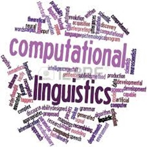
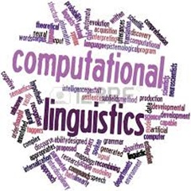

Applied AI Researcher
I am currently a Master's student at the University of Toronto, pursuing a Master of Science in Applied Computing degree with AI concentration. Through the application of fundamental probability and statistics, machine learning possesses an unparalleled capability that has never ceased to amaze me. This is what continues to motivate me to work in this exciting field.
Before this, I had the privilege of spending two exciting years at Google India. I worked as a Software Engineer with the Google Cloud team, contributing to the collective efforts of devising solutions to optimize resource usage across the fleet.My interests in AI also prompted me to become a founding member of a CV-based startup called S20.AI. I got the opportunity to work on multiple projects and learnt how to use my knowledge from basic image processing to Deep learning and MLOPs into creating accessible user friendly tools. In the summer of 2020, I also had the chance to be a Research Intern at Microsoft India (R&D) under the guidance of Dr. Ranganath Kondapally, where I worked on a novel problem of generating abstractive text summaries using short definitions.
My goal is to deepen my expertise in computer vision and Natural Language Processing, exploring the cutting-edge possibilities that lie at the intersection of these two. With ever increasing use of AI, I also wish to work towards making the AI tools safe and protect privacy of individuals.
I completed my undergraduate studies at the Indian Institute of Technology (IIT) Bhubaneswar in 2021 and find myself honoured to be awarded with Prof. P. Rama Rao Award and Tejaswi Memorial Award at graduation for academic excellence.
Beyond the code and algorithms, I love to dance and enjoy playing outdoor sports like basketball and going on hikes. Feel free to reach out if you'd like to discuss any of the above. I'm open to all kinds of potential collaborations and conversations!!
My academic foundation in AI, coupled with my two experience in applied research, equips me to analyze complex problems, design innovative solutions, and adapt to the ever-evolving AI landscape. My passion drives me to explore the latest advancements in CV and NLP area bringing focus to them in my work.
With an extensive programming background encompassing Python, C/C++, Java, and hands-on experience with tools like PyTorch and TensorFlow, I have the necessary skills to implement AI research into practical solutions. My proficiency extends to Docker and Kubernetes for efficient software deployment.
My analytical and problem-solving mindset is a cornerstone of my work. I am well-versed in data modeling and system design, allowing me to craft robust, data-driven AI applications. This skillset seamlessly complements my research and software development expertise.
A selection of my range of work
 Bringing Spatial Flexiblity to Google Fleet
Bringing Spatial Flexiblity to Google Fleet
 Chatbot for Complex Database Visualization
Chatbot for Complex Database Visualization
 Unsupervised Video Annotation
Abstractive Text Summarization
Unsupervised Video Annotation
Abstractive Text Summarization
 3D Rendering of Resale Cars
3D Rendering of Resale Cars
 Covid 19 Prediction and spread prevention
Data Dictionary using Angular

Language Dependencies through Cognates
Privacy-Preserving Generative Models
Covid 19 Prediction and spread prevention
Data Dictionary using Angular

Language Dependencies through Cognates
Privacy-Preserving Generative Models